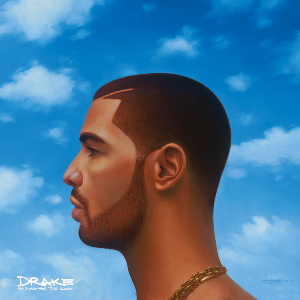

Drake
"The 6 God"
Photo taken by Berengere Vch via Flickr
Drake, born Aubrey Graham on October 24, 1986, in Toronto, Canada, is one of today's biggest rap and hip-hop artists. He first gained popularity for his acting role on the teen drama 'Degrassi: The Next Generation' in the early 2000s. Graham eventually left the show in 2007 to pursue his music career, and released "So Far Gone" before signing to Lil Wayne's Young Money Records. He's a four-time Grammy award winner and his latest album, "Scorpion," became his fifth consecutive number one album in the U.S.

